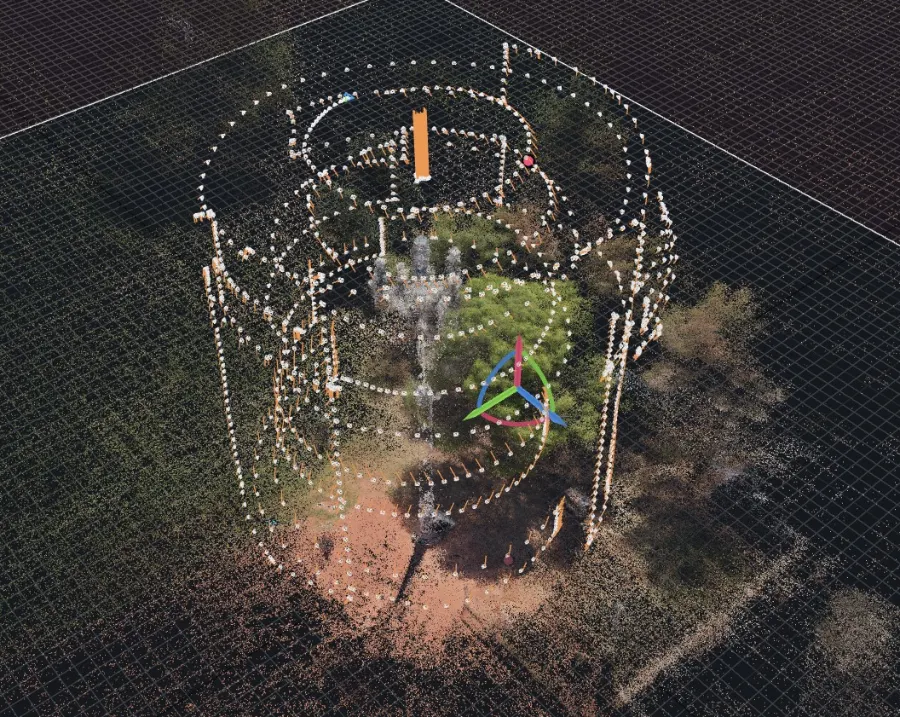
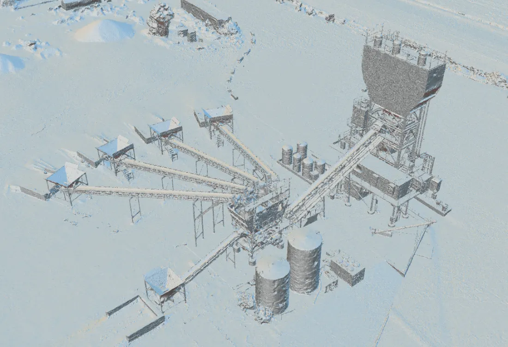

Tier 1 · Measurable
Verified Capture
Corrected, controlled and independently graded. When somebody downstream is going to measure from the model, take a quantity off it, or design against it, this is the tier that survives the question of where the numbers came from.
Method
Control points build the model. Check points grade it.
These are two different things and conflating them is how unverified numbers end up in authoritative systems. We keep them separate on every job.
- BASEA base station we occupy ourselves, logging raw observations for the duration of the flight. On remote sites this removes any dependence on cellular coverage or a correction subscription.
- CORRECTIONRTK in real time, PPK in post, or both run as independent solutions so there are two answers to compare rather than one answer to trust.
- CONTROL POINTSSurveyed targets fed into the reconstruction before alignment. These shape the solve.
- CHECK POINTSSurveyed targets deliberately withheld from the solve. The model never sees them. Residuals are then measured at those locations to find out what the reconstruction actually got wrong.
- REPORTINGHorizontal and vertical residuals at the withheld points, the number of points used, the correction state, and the coordinate reference frame and epoch, all delivered with the data.

The flight is evidence too
Coverage, overlap and camera geometry decide what the reconstruction can resolve before any processing happens. Those parameters are planned against the deliverable and retained with it, so a result can be traced back to how it was flown.
A capture that cannot be described step by step is a capture that cannot be repeated, and one that cannot be repeated cannot be defended.
Deliverables
What arrives.
Measured products
- Orthomosaics at specified ground sample distance
- Digital surface and digital terrain models
- Classified and unclassified point clouds
- Textured 3D meshes and digital twins
- Contours, cross sections and volumetric computations
- Asset inventories and extracted features
The record that comes with them
- Control and check point report with measured residuals
- Correction state and base station occupation record
- Coordinate reference frame, vertical datum and epoch
- Source tagging on every reported attribute: measured, observed, reported, or not assessed
- A written statement of what was not captured and why
Integration
Delivered into the systems you already run rather than a platform you have to adopt. ArcGIS Pro and ArcGIS Online, QGIS, CAD, and standard interchange formats.
Most clients already own capable software and are using a fraction of it. Replacing that is rarely the right recommendation, so we do not lead with it.

Strip the texture and the geometry is what remains
Photographs make a site look convincing. Geometry is what you take a dimension from. Every product in this tier is built so the second one holds up on its own, without the first one carrying it.
Applications
Where this tier is the right answer.
- Infrastructure and bridge documentation, including historic and heritage structures
- Construction progress verification and earthwork quantities
- Corridor and utility mapping, right-of-way base data, as-built support
- Facility and public safety pre-incident intelligence
- Multi-temporal change detection where two dates have to be comparable
- Any deliverable a third party will measure from, design against, or rely on in a submittal
Limits, stated up front
What Verified Capture is not.
It is not a survey, and we do not call it one. The term survey-grade is reserved for work verified and stamped by a licensed professional surveyor. Axis Fields asserts RTK-anchored, centimeter-level, measurable and defensible geometry with reported residuals. That is a different and narrower claim, and we hold the line on it.
Where a project genuinely requires a stamped, certified product, we bring a licensed professional surveyor onto the engagement rather than stretching the language. Tell us early and it costs less.
Photogrammetry and lidar do not see through walls. No interior access means interiors come back hollow. We say so in writing before collection, not after, because a responder who does not know a space is unmapped will assume it is mapped.
A datasheet figure is not a result. We will not quote a sensor's relative accuracy specification as though it were verified absolute accuracy achieved on your site. If you have been given a number like that by anyone, ask which points were withheld from the solve.
Equipment
The tier is enforced by the hardware, not the invoice.
Verified work flies on specific aircraft with specific ground equipment. A Visual Capture aircraft cannot be upgraded into this tier by relabelling the job.
- AIRCRAFTDJI Matrice 4 Enterprise, mechanical shutter, RTK. Aircraft assignment is recorded per mission.
- GNSSEmlid Reach RS3 base station and Reach RX rover. Raw observation logging for independent PPK post-processing.
- TERRESTRIALHandheld SLAM lidar for occluded geometry, used for single-scan gap fill on surfaces aerial capture cannot reach.
- PROCESSINGRealityScan, Agisoft Metashape, DJI Terra, Emlid Studio, CloudCompare for residual verification, ArcGIS Pro and QGIS for delivery.
What decision does the data have to support?
Answer that and the control plan, the aircraft, the ground sample distance and the price all follow from it.